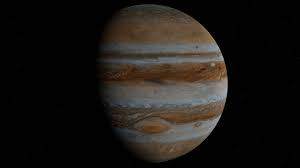

|  |
|
Júpiter es el planeta más grande de nuestro sistema solar. Parecido a una estrella, pero nunca llegó a ser lo suficientemente masiva como para empezar a arder. Está cubierto de rayas de nubes arremolinadas. Tiene fuertes tormentas como la Gran Mancha Roja, que hace cientos de años que dura. Júpiter es un gigante hecho de gas, y no tiene una superficie sólida, pero puede tener un núcleo interno sólido de aproximadamente el tamaño de la Tierra. Júpiter también tiene anillos, pero son demasiado tenues para verlos muy bien. |